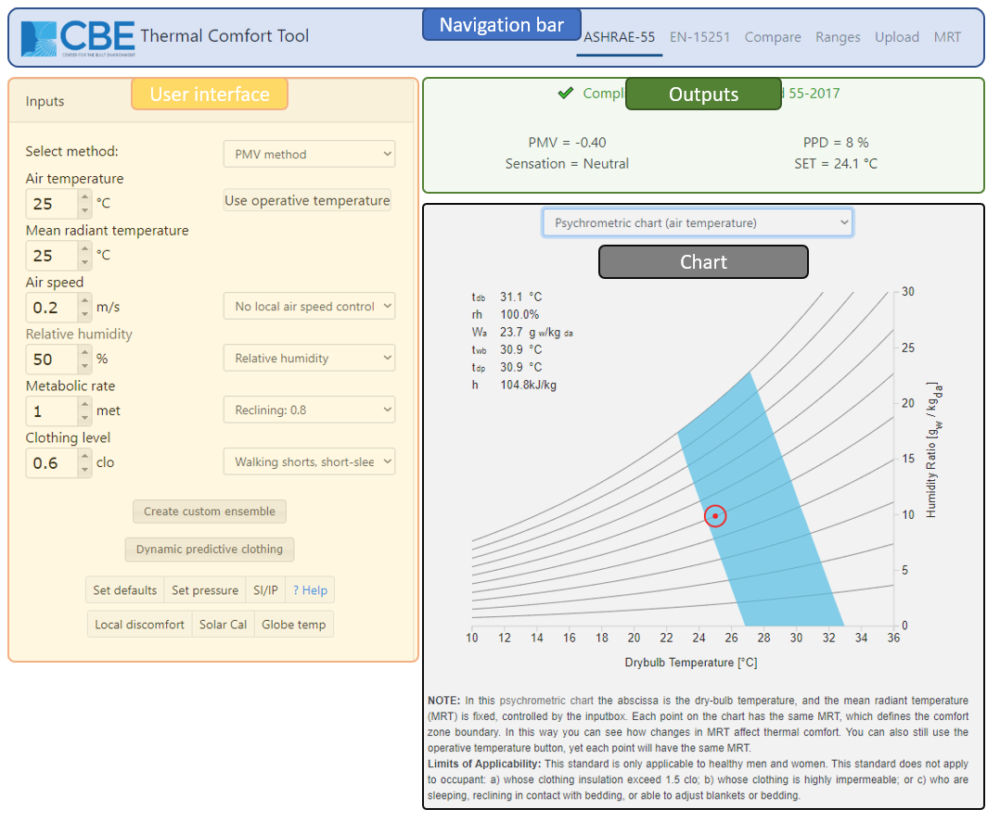

Introduction
This web-based tool for thermal comfort calculations according to ASHRAE Standard 55-2017 is developed at the University of California at Berkeley.
Its aim is to provide a free, cross-platform tool that allows designers and other practitioners to perform thermal comfort calculations.
See the bottom of the web-page for acknowledgments, contact information, and citation.
This guide aims to explain the main features of the tool, and demonstrate how best to use it.
In most cases, the interface is intuitive and does not require explanation.
To get information quickly, click on an input header to be directed to a Wikipedia article relevant to that specific input.
Video tutorials are available at the following links:

Getting Started
Main interface
The tool has three main parts:
-
Left-hand side: This section is the user interface.
It contains the input fields containing values that drive the comfort calculations and visualizations.
To change these input values, you can type directly in the boxes or click on the up and down arrows.
There are also several other buttons, their functionality is explained in detail below.
-
Top-right: This section contains the results of the calculations.
The raw output of the comfort model calculations (such as PMV, PPD, etc. for the PMV method) as well as compliance information.
-
Bottom-right: This section contains a visualization of the thermal comfort conditions in the input.
There are currently three types of charts visualizing the thermal comfort region, as follows:
-
Psychrometric (plotted using either the dry-bulb air temperature or the operative temperature)
-
Relative humidity vs. dry-bulb air temperature.
-
Air speed vs. operative air temperature.
-
Thermal heat losses vs. dry-bulb air temperature.
This chart shows the total heat losses per unit area as calculated by the PMV method.
By default, the chart is showing only the total heat losses of the human body (latent, sensible as well as their cumulative value) and the metabolic rate.
The intersection between the metabolic rate line (constant) and the total heat losses line is the neutral temperature at which the human body is in thermal balance with the surrounding environment.
You can toggle on and off other lines, depicting different heat loss components, by clicking on the respective label in the legend.
-
Operative indoor air temperature vs. prevailing mean outdoor temperature (Adaptive comfort region).
Comfort Models
At the top of the user interface you can choose between the two methods allowed by the standards, which are the PMV/PPD method and the Adaptive method.
For air speeds greater than 0.2 m/s (39.4 fpm) the PMV calculations employ the elevated airspeed method, which calculates and reports the cooling effect of the air
movement.
For more information about the comfort models, you can follow the link to Wikipedia by clicking on 'select method'.
PMV method
There are six primary factors that affect thermal comfort. These include environmental conditions such as air temperature, and personal factors such as metabolic rate.
Environmental conditions
Air Temperature
By modifying this value, you will notice the output in the upper-right region changing, as well as the red dot on the psychrometric or temperature-humidity chart
moving. This value corresponds to the x-axis of both charts.
Depending on which specification of humidity is being used, the red dot may follow the lines of constant relative humidity, or move horizontally.
This value does not affect the comfort zone itself, since the zone represents a range of air temperature and humidity values.
Next to the air temperature box, you can click on the 'use operative temperature' button.
When this option is selected, it will be assumed that the air temperature and mean radiant temperature are equal to the value in the operative temperature input field.
Note that the x-axis of the psychrometric and temperature-humidity charts still represents dry-bulb temperature.
Mean Radiant Temperature (MRT)
MRT represents the mean of the radiant temperatures of the enclosing surfaces of a space, which is determined by the emissivity and the temperature of the surfaces.
This value affects the location of the comfort zone, since it may affect the range of acceptable air temperatures.
For example, higher radiant temperatures allow the occupant to feel comfortable at lower air temperatures, or vice versa.
Thus, an increase in MRT shifts the comfort zone to the left side of the charts.
Air Speed
This is the rate of spatial change of air in a space, which is used to calculate convective heat transfer and thus changes the comfort zone.
Higher air speeds allow higher temperatures and humidity, due to the cooling effect that air movement has on an occupant.
Local air speed control is the ability for the occupants to modify the local air flow, and if this is not available in their space, limits apply to the range of
temperatures that can be covered.
Therefore, availability of local control allows wider ranges of air speed that can be used to offset higher temperatures.
Relative Humidity
Relative Humidity is the ratio of the partial pressure of the water vapor in the air to the saturation pressure of water vapor at the same temperature.
You can also input dew-point temperature, humidity ratio, wet bulb temperature, or vapor pressure, by selecting it through the expandable box.
Humidity will change the position of the dot.
It doesn't affect the comfort zone boundary since the boundary represents a range of temperature and humidity, but it does affect the PMV/PPD calculations.
Personal factors
Metabolic Rate
Metabolic rate is the rate of energy production of the body, which varies for different activities.
A list of common activities and correspondent metabolic rate in met units is available next to the input box.
You can either chose one value from the list or type a different and more precise one directly, as preferred.
Increasing the metabolic activity means moving the comfort zone significantly towards lower temperatures and vice versa, since higher activities make the body produce
more heat and thus be more comfortable in colder environments.
Elevated metabolic rate can also result in decreased effective clothing value and increased relative air velocity (as air is pumped through clothing).
Clothing level
Clothing is probably the most important variable in terms of adaptation to a thermal environment, and this means that acting on the clothing level may be very effective
to reduce energy consumption.
This tool allows you to select clo values for common clothing ensembles by the list on the right of the input box, or also to create a custom ensemble by choosing every
garment that composes it, by clicking on the button just beneath.
This meets the methods provided by the Standard to evaluate the clothing insulation, as you can see in more depth by clicking on the Wikipedia link.
It's important not to forget the clo value provided by the chair, that can be found in the list of garments. Once the ensemble has been created, the clo value can be
set to the input field.
Adaptive method
By choosing the Adaptive method at the very top of the user interface, the chart changes and the input variables include air temperature, mean radiant temperature and
prevailing mean outdoor temperature.
This is because the personal factors and humidity are not significant in this method since adaptation is considered, and the only variable is the outdoor temperature.
See above for explanation of the first two variables, air and mean radiant temperature.
Prevailing mean outdoor temperature
Here you can type the outdoor temperature averaged as explained on the standard. See the Wikipedia link for a brief explanation.
Changing this variable makes the dot representing the current condition move horizontally. The meaning of this chart is that certain conditions of indoor-outdoor
temperature fall inside the comfort zone, which in this case is static.
Air speed
In the Adaptive method air movement can be used under certain conditions to widen the comfort zone, allowing higher indoor operative temperatures. You can select the
value and see how it changes the upper boundaries of the 80% and 90% acceptability zones.
Additional Features
At the bottom of the input section of the tool, you can find more clickable buttons to set more parameters and open some dialogs.
Dynamic Predictive Clothing
According to an addendum of the Standard, clothing insulation can be predicted by knowing the outdoor air temperature at 6 a.m. of the day in question.
By opening this tab, you will be able to type such temperature, based on measurements or a weather file, and feed it to an equation that will automatically update the
value in the clo input box, and update the comfort zone according to this change.
Globe temperature calculator
Clicking on this button, a new window pops up, letting you type the following inputs: air temperature, air speed, globe temperature, globe diameter, globe emissivity,
to calculate the correspondent Mean Radiant Temperature, that can be set as the current value by clicking the 'set' button.
This feature allows you to have a more precise evaluation of the MRT by taking measurements with a globe thermometer.
The button is disabled when the operative temperature is used.
Specify pressure
You can change the barometric pressure to account for changes in altitude. The standard atmospheric pressure is 1 atm = 101.325 kPa = 101325 Pa.
Remember to input the value in Pascals!
Set Defaults
This button sets some default values for all the input variables, to restart the calculation and visualization.
SI/IP
Click on this button to switch between the International System of Units (SI) and the Inch-Pound system.
Local thermal discomfort
Even though the comfort model based on PMV/PPD describes compliance to thermal comfort for the body as a whole, thermal dissatisfaction may also occur just for a
particular part of the body due to local sources of unwanted heating, cooling or air movement.
This feature allows you to verify the compliance of the space to the Standard as regards local thermal discomfort.
By feeding the tool with measurements of air temperature in particular zones surrounding the occupant, you can see whether the discomfort effect in the space is likely
to exceed the ASHRAE-55 acceptability limits.
Draft at the lower leg region may occur in the buildings conditioned by thermally stratified systems, such as displacement ventilation and underfloor air distribution,
or with cold-dropping airflow along external walls and/or windows.
An ankle draft risk model, based on the work of by
Liu et al. (2017) - free pdf - and
Schiavon et al. (2016) - free pdf -,
has been implemented in the tool.
This model can evaluate the predicted percentage dissatisfied on draft at ankle level (PPD
AD) as a function of PMV and air speed at ankle.
Regarding the usage of ankle draft risk model, subject's metabolic rate and clothing level should be kept below 1.3 met and 0.7 clo, respectively.
The air speed on the upper body is fixed as 0.2 m/s for PMV calculation in the ankle draft risk model, since a condition of air speed higher than 0.2 m/s should refer
to the elevated air speed model instead.
Change the values in the input boxes according to your measurements.
A checkmark will appear next to each section, while a general compliance message will be shown at the bottom of the dialog.
Remember that to comply with the Standard all the sections must respect the limits.